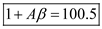
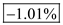

Step 1:
(a)
Refer to the circuit diagram of three stage feedback amplifier in Figure P10.42 in the textbook.
As the feedback is taken across the resistance,  , if input voltage increases, the output current of amplifier
, if input voltage increases, the output current of amplifier  also increases. Thus the output voltage increases, as it is sampled by a voltage divider circuit with resistances,
also increases. Thus the output voltage increases, as it is sampled by a voltage divider circuit with resistances,  . Thus the feedback is negative.
. Thus the feedback is negative.
Step 2:
(b)
The differential input resistance of amplifier  ,
,
The open-circuit differential voltage gain,
The output resistance,
The input resistance of the amplifier ,
, 
The short-circuit trans-conductance,
The output resistance,
The input resistance of amplifier,
The open-circuit voltage gain is unity.
The output resistance,
The load resistance of the amplifier,
The source resistance,
The feedback resistances are:
The small signal equivalent circuit is shown in Figure 2.
Figure 2
Step 3:
(c)
The A-circuit is shown in Figure 2.
Calculate the open loop gain of the amplifier.
Determine the gain of the first stage of the amplifier.
Step 4:
Determine the gain of the second stage of the amplifier.
Determine the gain of the third stage of the amplifier.
Step 5:
Substitute the calculated values in the gain formula.
Thus, the gain of the three-stage amplifier is:  .
.
Step 6:
(d)
Calculate the feedback factor.
Thus, the feedback factor of the three-stage amplifier is: .
Calculate the amount of feedback.
Thus, the amount of feedback of the three stage amplifier is: .
Step 7:
(e)
Calculate the closed loop gain of the amplifier.
Thus, the closed loop gain of the three stage amplifier is: .
Step 8:
(f)
Calculate the input resistance of the feedback amplifier.
Thus, the input resistance of the three stage feedback amplifier is.
Step 9:
(g)
Calculate the output resistance of the feedback amplifier.
Thus, the input resistance of the three stage feedback amplifier is.
Step 10:
(h)
It is given that the high frequency,
Calculate the upper 3 dB frequency of the closed-loop gain.
Thus, the upper 3 dB frequency of the closed-loop gain is: .
Step 11:
(i)
It is given that the gain  drops to half of its nominal value.
drops to half of its nominal value.
Calculate the new closed-loop gain.
Calculate the percentage change in closed-loop gain.
Thus, the percentage change in closed-loop gain is .